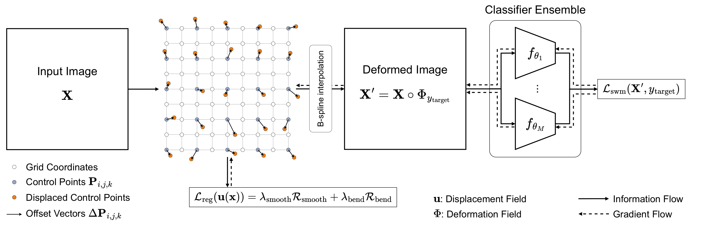
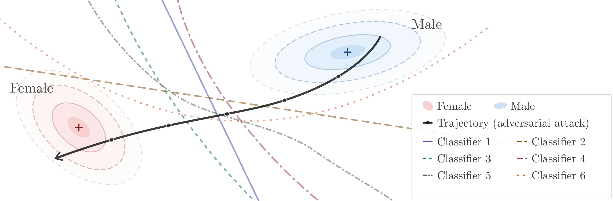
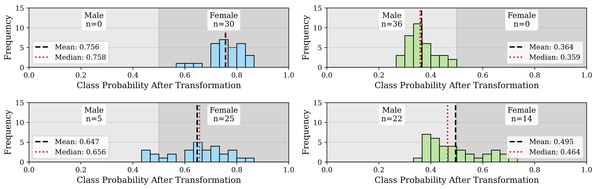
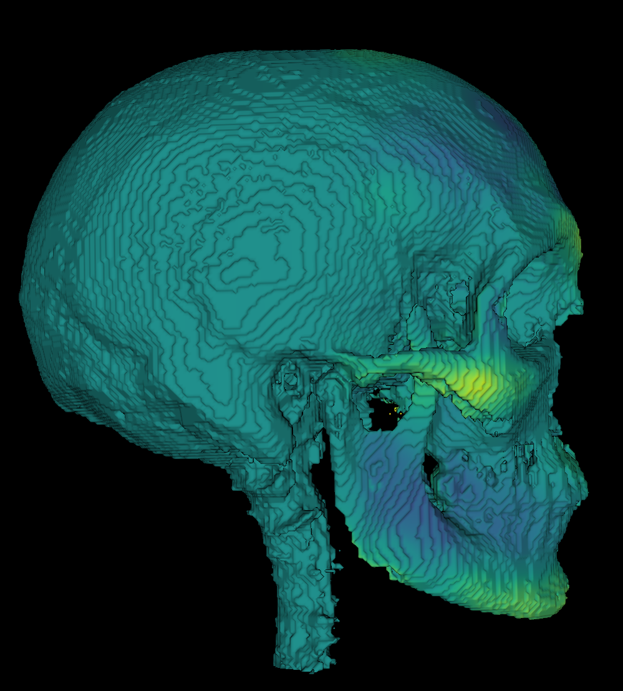
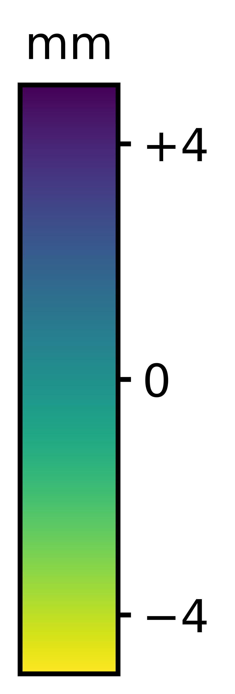
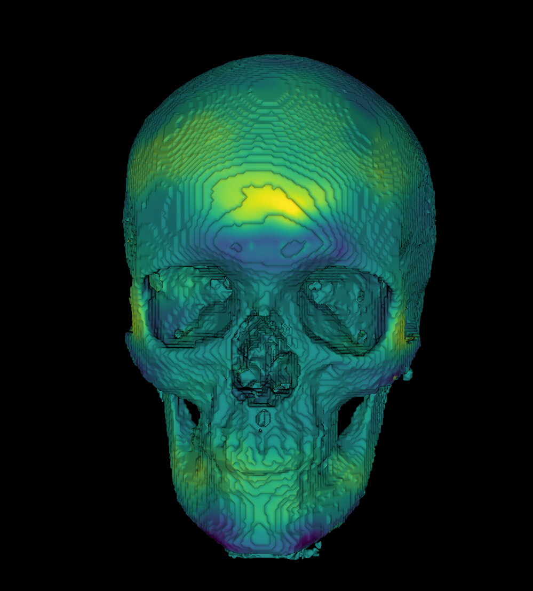

The fundamental question this paper answers
Facial feminization surgery (FFS) is a key component of gender affirmation for transgender and gender diverse patients, aiming to reshape craniofacial structures toward a female morphology. Current surgical planning procedures largely rely on subjective clinical assessment, lacking quantitative and reproducible anatomical guidance. We therefore propose AutoFFS, a novel data-driven framework that generates counterfactual skull morphologies through adversarial free-form deformations. Our method performs a deformation-based targeted adversarial attack on an ensemble of pre-trained binary sex classifiers that learned sexual dimorphism, effectively transforming individual skull shapes toward the target sex. The generated counterfactual skull morphologies provide a quantitative foundation for preoperative planning in FFS, driving advances in this largely overlooked patient group. We validate our approach through classifier-based evaluation, propose Morphological Fréchet Distance (MFD) and Morphological Kernel Distance (MKD) to evaluate distributional alignment of generated and real populations, and perform a human perceptual study, confirming that the generated morphologies exhibit target sex characteristics.
Let \(\mathcal{D}\) denote a dataset of skull shapes, where each skull is represented by a function \(\mathbf{X}_i: \Omega \to \mathbb{R}\) mapping spatial coordinates to occupancy values, and \(y_i \in \{0,1\}\) denotes a binary sex label ((0) male, (1) female). We propose to solve FFS planning by finding a conditional deformation field \(\Phi_{y_{\text{target}}}: \Omega \to \Omega\) such that the transformed skull \(\mathbf{X}' = \mathbf{X} \circ \Phi_{y_{\text{target}}}\) exhibits features of the target sex \(y_{\text{target}}\).
We parameterize the deformation field \(\Phi\) as a 3D cubic B-spline FFD. A regular control lattice is defined over the scan domain \(\Omega\) with \(n_x \times n_y \times n_z\) control points, each with an associated offset \(\Delta\mathbf{P}_{i,j,k}\) defining its displacement from the initial lattice position. The continuous displacement field at any spatial location is obtained through cubic B-spline interpolation of the control point offsets, yielding smooth and spatially coherent transformations. While adversarial optimization can effectively drive the deformation process, it is likely to produce unrealistic, non-smooth transformations if unconstrained. We therefore apply two regularization terms: a smoothness regularizer \(\mathcal{R}_{\text{smooth}}\) penalizing the Jacobian of the displacement field, and a bending energy regularizer \(\mathcal{R}_{\text{bend}}\) penalizing rapid spatial variations via second-order derivatives, encouraging smooth, physically plausible transformations.
To learn a normative representation of the population, we train classification networks to solve a binary sex classification task, through which the networks implicitly learn discriminative features that characterize male and female populations. We train an ensemble of \(M\) classifiers \(\{f_{\theta_m}\}_{m=1}^M\) with different architectures, including four ResNets (\(\texttt{ResNet\{18,34,50,101\}}\)) and four Squeeze-and-Excitation ResNets (\(\texttt{SE-ResNet\{18,34,50,101\}}\)). Fooling multiple classifiers, each learning distinct feature representations, is substantially more challenging than fooling a single network; consequently, the ensemble approach yields more robust representations that better capture population-level characteristics. As we require localized features to effectively drive the optimization process, we apply a masking strategy during training: the volume is split into \(64 \times 64 \times 32\) patches and 50% are randomly masked per iteration.
At test time, we perform a targeted adversarial attack on the pre-trained classifier ensemble by optimizing \(\Phi_{y_{\text{target}}}\) to produce a deformed scan \(\mathbf{X}'\) that fools the classifiers into predicting \(y_{\text{target}}\). All classifier weights are frozen; only the control point offsets \(\Delta\mathbf{P}_{i,j,k}\), initialized to zero (identity transform), are optimized. We introduce a smooth worst-case margin loss \(\mathcal{L}_{\text{swm}}\) based on the log-sum-exp operator, which smoothly approximates the worst-case logit across the ensemble, targeting the most resistant classifier while maintaining gradient flow through all ensemble members. The temperature parameter \(\tau\) controls the smoothness of the approximation. To enforce symmetric deformations, the classifier ensemble is additionally applied to deformed scans mirrored across the midsagittal plane. As the deformation is parameterized by spatially localized control points, displacements can be masked region-wise; we fix control point displacements in the posterior half of the volume to zero, restricting modifications to facial features.
The figure below provides an intuitive illustration of this process: starting from an input skull, the deformation field iteratively moves the sample across each ensemble classifier's decision boundary until the deformed shape is confidently assigned to the target sex.

We transform the entire test set and evaluate the resulting class probabilities using hold-out classifiers not seen during optimization. Our approach consistently produces deformed scans classified with the target sex label, achieving a flip rate of 100%. Using only the single best classifier (\(\texttt{ResNet34}\)) without ensembling during optimization results in a flip rate of ~71%. This comparison highlights the improved consistency afforded by the ensembling strategy, which reduces the variance of the resulting class probabilities, yields more robust deformations and an overall higher flip rate.

The largest deformations concentrate in the chin, brow ridges, forehead, and the zygomatic bones: regions identified as sexually dimorphic in the anthropological literature. Examining the two directions separately reveals a coherent and anatomically interpretable pattern. In the masculinization case (FMS), the model produces a laterally expanded and generally thicker zygomatic bone, a wider chin, and a more pronounced brow ridge. The feminization case (FFS) exhibits the inverse behaviour, with an attenuated brow ridge, a less anteriorly projecting chin, and a smaller, less laterally pronounced zygomatic bone. This correspondence is notable given that no anatomical priors were imposed, meaning that the method recovers these regions purely from the learned classifier representations. This pattern is consistent across the dataset, not only the examples shown.
FFS: Male → Female


FMS: Female → Male

We conduct a perceptual study with \(N=11\) participants. Each rater is presented with 80 skulls comprising 20 real male, 20 real female, 20 generated male (f→m), and 20 generated female (m→f) samples in randomized order, and is tasked with classifying the biological sex of each skull. Raters correctly identified the sex of real skulls with 81% accuracy (~88% is reported for expert anthropologists), confirming that sexually dimorphic features are perceptible. For transformed skulls, accuracy dropped to 37%, well below chance, indicating that raters perceived the intended target sex in 63% of cases. The 44% drop in accuracy demonstrates that the pipeline produces a substantial and systematic perceptual shift. This effect was achieved despite the method only modifying anterior facial features while leaving posterior features and overall size unchanged. The lower agreement metrics for transformed skulls suggest that transformed morphologies are perceptually more ambiguous, consistent with the partial modification of sexually dimorphic features.
| Category | Accuracy | \(\kappa_{\text{inter}}\) | \(\kappa_{\text{intra}}\) |
|---|---|---|---|
| Real | 0.81 ± 0.06 | 0.51 | 0.78 |
| Generated | 0.37 ± 0.08 | 0.37 | 0.43 |
@article{friedrich2026autoffs,
author = {Friedrich, Paul and Bieder, Florentin and Thieringer, Florian M. and Cattin, Philippe C.},
title = {AutoFFS: Adversarial Deformations for Facial Feminization Surgery Planning},
journal = {arXiv preprint arXiv:2603.02288},
year = {2026},
}We thank Cristina Granziera and Lester Melie-Garcia for providing access to the dataset and Martin Styner for helpful discussions around the evaluation of the method. We would further like to thank Judith Zecha, Ruud Schreuers, Juliana Sabelis and Hugo Beltman for inspiration and helpful discussions throughout the project. This work was financially supported by the Werner Siemens Foundation through the MIRACLE II project.
This paper is part of FACTS — Facial Affirmation Clinical and Technological Standards.